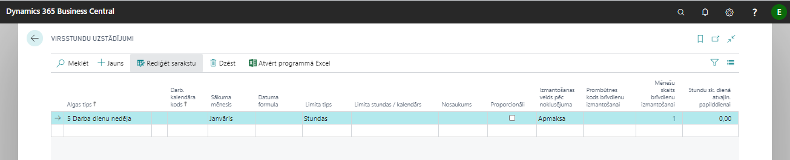

Virsstundu uzstādījumi
Lai sistēmā tiktu veikts korekts virsstundu aprēķins, ir jāsaliek sekojoši uzstādījumi:

| Lauka nosaukums | Apraksts |
|---|---|
| Algas tips | Izvēlas, kāds darba algas aprēķina tips tiks izmantots Virsstundu aprēķinā: a) 5 Darba dienu nedēļa; b) Summētais darba laiks; c) Maiņu darbs; c) 6 Darba dienu nedēļa. |
| Darb. kalendāra kods | Norāda kalendāru, kurš tiks izmantots virsstundu aprēķinā. |
| Sākuma mēnesis | Norāda, no kāda mēneša tiek veikts virsstundu aprēķins. Paredzēts summētajam darba laikam, ja pārskata perioda sākums atšķiras no gada sākuma. Visos pārējos gadījumos jānorāda Janvāris. |
| Datuma formula | Norāda periodu, par kuru virsstundas tiks aprēķinātas. |
| Limita tips | Norāda tipu, no kura tiks ņemta informācija par nostrādātajām stundām: a) Stundas - izvēlas, ja jānorāda stundu skaits; b) Kalendārs - par pamatu virsstundu aprēķinam tiks izmantots kalendārs. |
| Limita stundas/kalendārs | Ja ir izvēlēts tips kalendārs, tad izvēlas atbilstošo kalendāru no saraksta. Ja tips ir stundas, tad norāda stundu skaitu, kuras pārsniedzot tiks rēķinātas virsstundas. |
| Nosaukums | Brīvi ierakstāms paskaidrojums. |
| Proporcionāli | Izvēlas, ja laukā tips ir Kalendārs un virsstundas paredzēts rēķināt tikai no nostrādātā laika. Aprēķinā ņem vērā arī prombūtni un darbā pieņemšanas datumu. |
| Izmantošanas veids pēc noklusējuma * | Izvēlas: a) Apmaksa; b) Brīvdiena; c) Atvaļinājuma papilddiena. |
| Prombūtnes kods brīvdienu izmantošanai * | Norāda kodu VIRS_ATPUT. |
| Mēnešu skaits brīvdienu izmantošanai * | Norāda cik mēnešus atpakaļ vajag meklēt pieejamas virsstundas, kuras izmantos kā brīvdienu. |
| Stundu sk. dienā atvaļin. papilddienai * | Norāda virsstundu skaitu lai piešķirt darbiniekam vienu atvaļinājuma papilddienu. |
*lauki paredzēti virstundu kompensēšanai. Detalizēts procesa apraksts nodaļā Virsstundas kompensācijas ar atpūtas laiku.